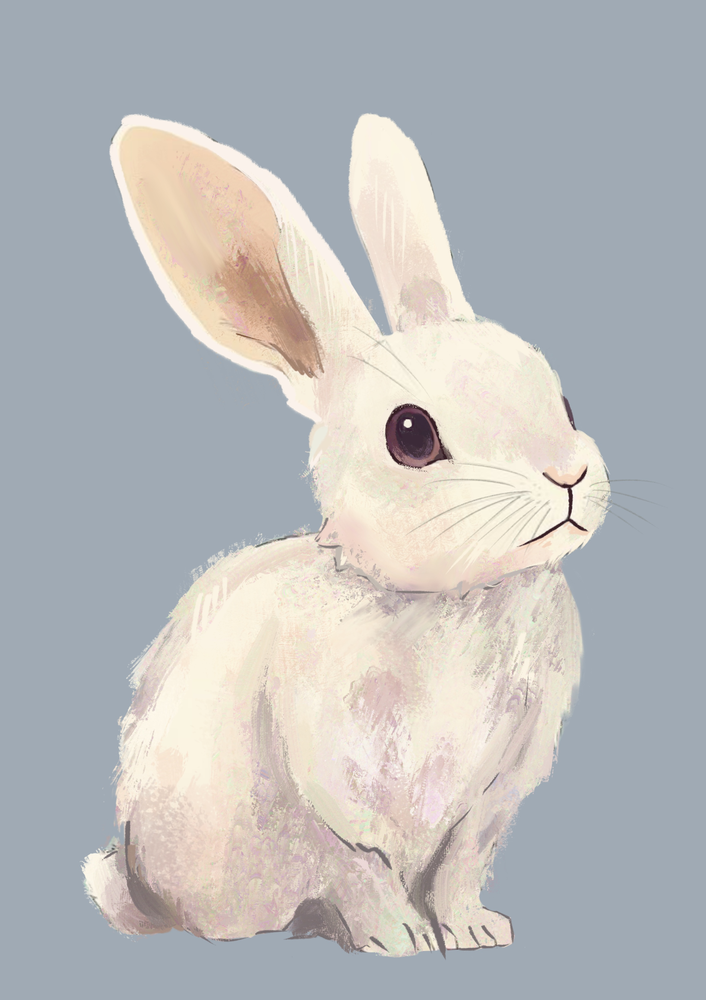
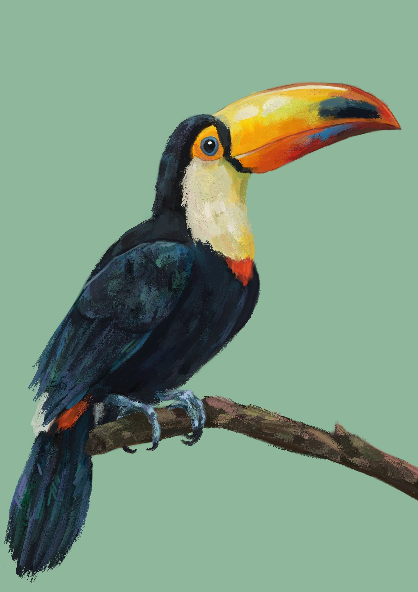
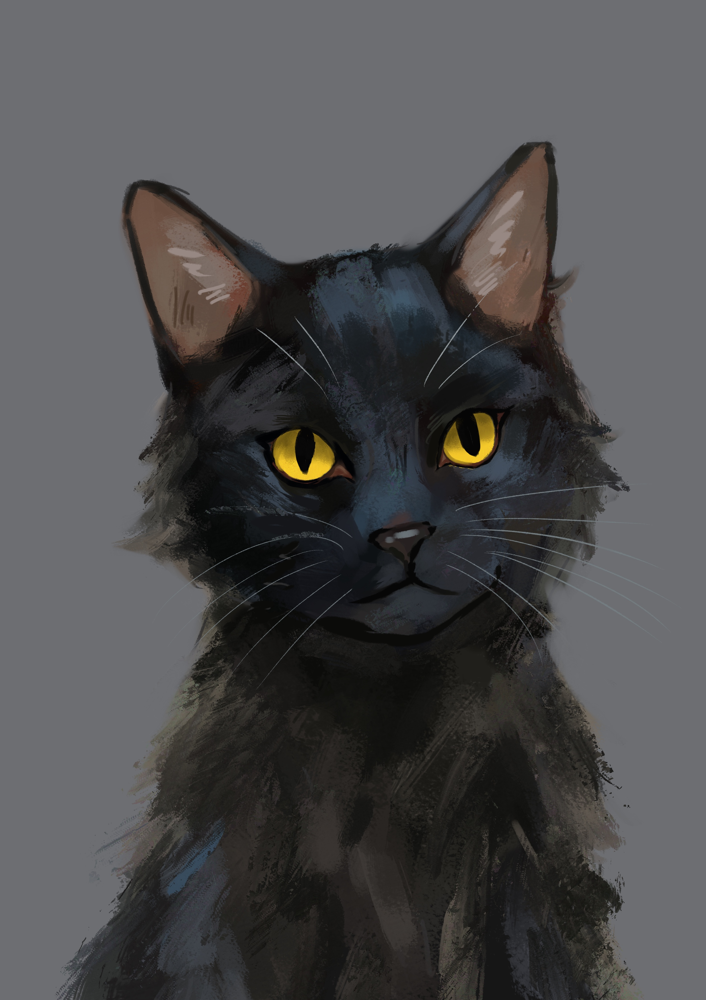
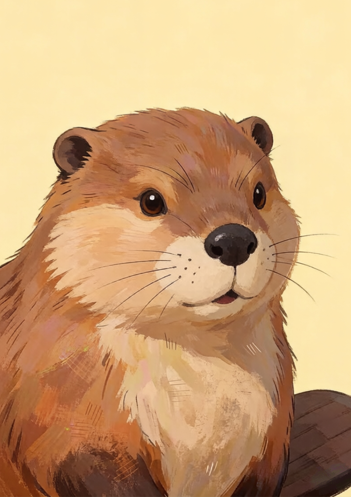
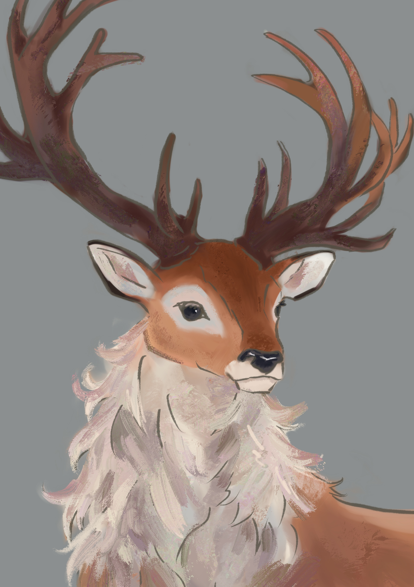
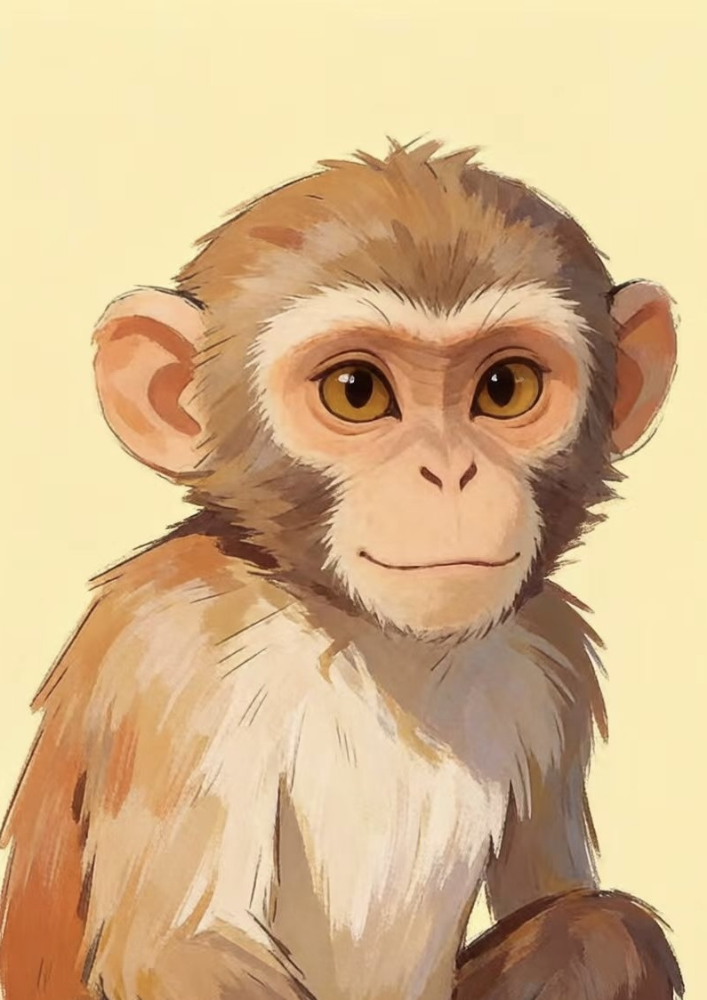
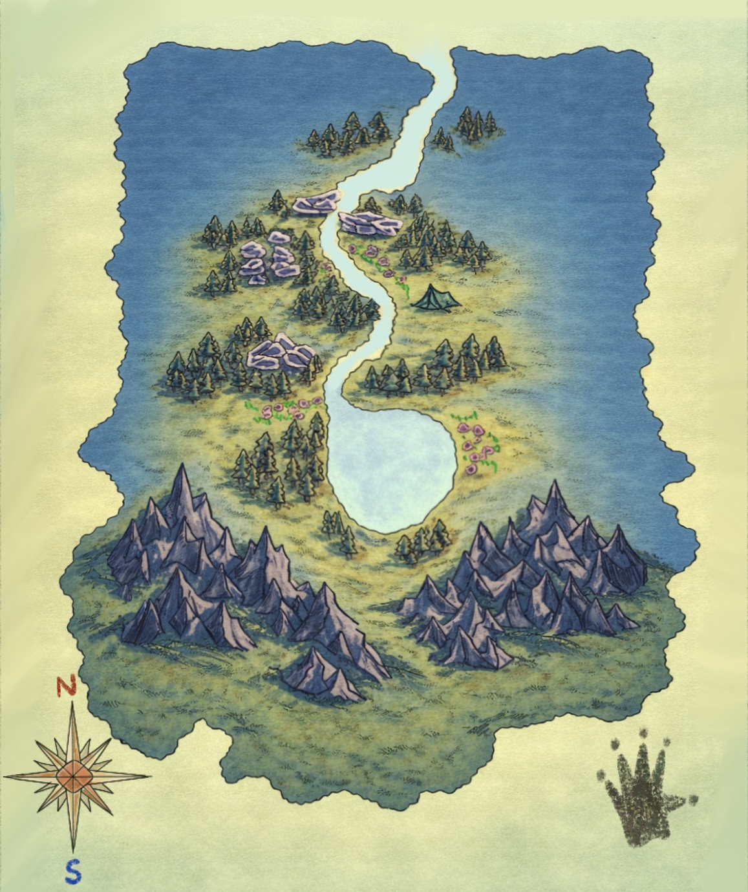

Red Panda's Journey
Narrative Adventure Game — Fantasy • Steampunk • Coming-of-Age
A story about choosing your own path
Red Panda's Journey is an original narrative adventure game about identity, freedom, and self-discovery.
The story follows a genetically engineered red panda originally created as a biometric weapon. Refusing the destiny written into his code, he escapes the laboratory and begins searching for his own purpose.
His journey eventually leads him into a peaceful forest filled with unique animal communities, where curiosity replaces obedience and friendship replaces control. Through exploration and the relationships he builds, he gradually learns what it means to make his own choices.
The visual direction combines warm storybook aesthetics with subtle steampunk influences to create a world that feels comforting, imaginative, and full of wonder.
Project Lead, Artist & Engineer
As one of four people on the team, I wore several hats — leading the project, directing its visual identity, and building much of the game's technical implementation alongside the art.
- Project Leadership
- Visual Direction
- Character Design
- Environment Design
- World Building
- Dialogue Portraits
- User Interface Design
- Gameplay Engineering
Control versus curiosity
I wanted every visual element to reinforce the central theme of freedom and exploration.
The laboratory uses cold colors and geometric structures to represent control, while the forest introduces warmer lighting, softer shapes, and more organic environments to symbolize curiosity and growth.
Each animal was designed with a distinctive silhouette, personality, and visual language so players could immediately recognize their role within the world.
Cast of the forest
A sampling of character designs, each built around a distinct silhouette and personality.








From the lab to the forest
The environments were designed to communicate emotional progression throughout the story — from a controlled beginning, through a disorienting in-between, to an open and welcoming end.
Cold colors and rigid, geometric structures represent the control the protagonist is fleeing.
The moment he steps outside the lab for the first time, free of his code and instructions but not yet sure who he is. This scene moves away from literal environments into abstract space — drifting shapes and uncertain color representing confusion and the search for identity.
Warmer lighting, softer shapes, and organic environments introduce curiosity, friendship, and growth.
Lightweight & unobtrusive
The interface was designed to feel lightweight and unobtrusive, allowing the artwork and storytelling to remain the focus. Rounded shapes, warm colors, and illustrated icons help create a cohesive visual experience that matches the game's overall tone.
